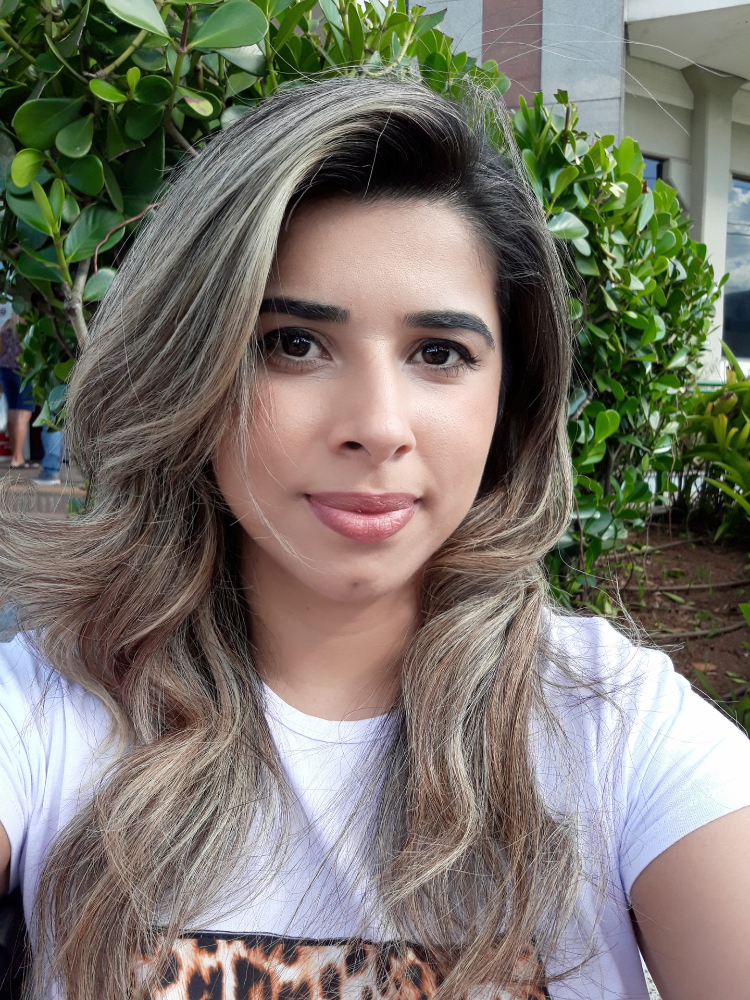

Oi Sou a Mariana
Mariana atuou na área de educação infantil por 7 anos e é fascinada por tecnologias digitais, gerenciamento de tempo, capacidade de priorização da gestão e de recurso humano.
Devido à pandemia, o seu jeito de lecionar mudou completamente, onde o interesse por aprender tecnologia, tornou-se cada vez maior e mais apaixonante. Hoje, Mariana é graduanda em Análise e Desenvolvimento de Sistema e está em transição de carreira (tem vários certificados na área) e bons conhecimentos nas seguintes linguagens de programação: - JavaScript, -Node.Js, - Banco de Dados; Marina se comunica de forma clara, é curiosa (alô, Google?), apaixonada por desafios, ama aprender (mente aberta) e muito flexível.
Busca uma Desenvolvedora Back-End Júnior com muito potencial? Que tal um bate-papo? ‚òïüíª
O que você encontra neste portifólio
- Projetos em andamento
- Desafios concluídos
- links para minhas redes sociais
- Trabalhos desenvolvidos na faculdade